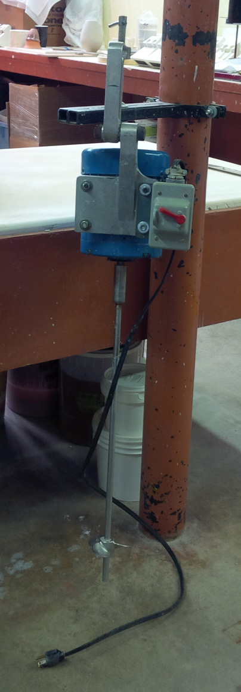
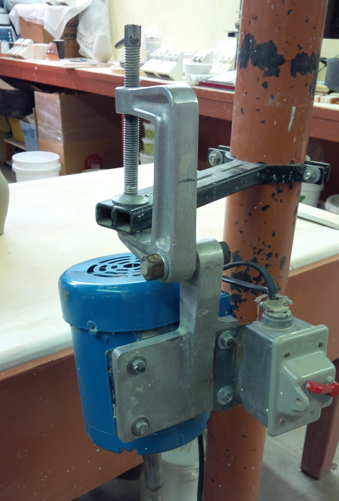
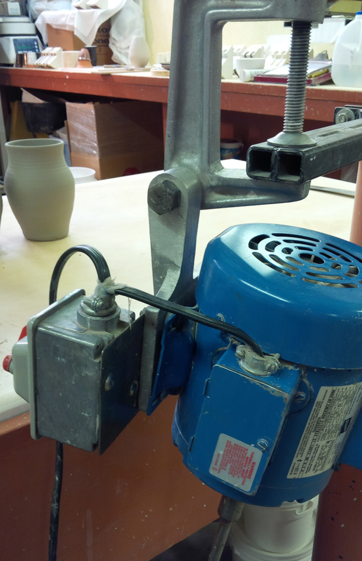
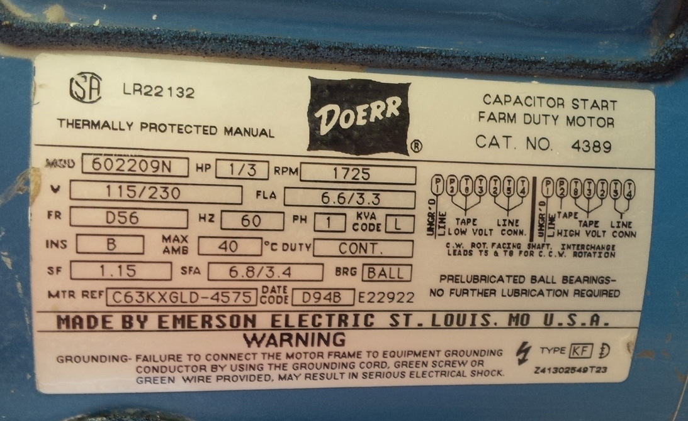
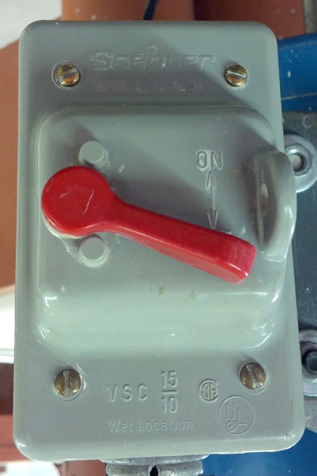
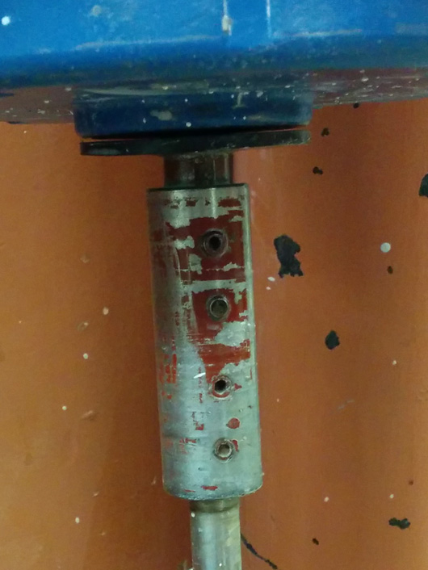
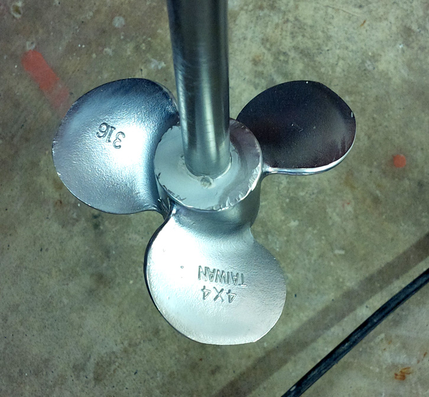
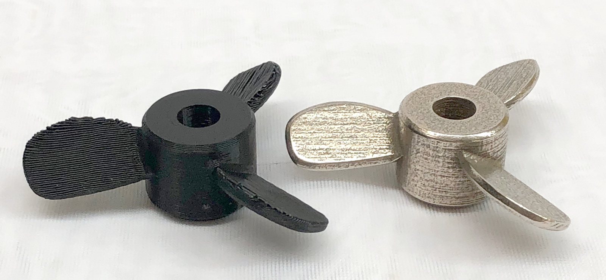

A Low Cost Tester of Glaze Melt Fluidity
A One-speed Lab or Studio Slurry Mixer
A Textbook Cone 6 Matte Glaze With Problems
Adjusting Glaze Expansion by Calculation to Solve Shivering
Alberta Slip, 20 Years of Substitution for Albany Slip
An Overview of Ceramic Stains
Are You in Control of Your Production Process?
Are Your Glazes Food Safe or are They Leachable?
Attack on Glass: Corrosion Attack Mechanisms
Ball Milling Glazes, Bodies, Engobes
Binders for Ceramic Bodies
Bringing Out the Big Guns in Craze Control: MgO (G1215U)
Can We Help You Fix a Specific Problem?
Ceramic Glazes Today
Ceramic Material Nomenclature
Ceramic Tile Clay Body Formulation
Changing Our View of Glazes
Chemistry vs. Matrix Blending to Create Glazes from Native Materials
Concentrate on One Good Glaze
Copper Red Glazes
Crazing and Bacteria: Is There a Hazard?
Crazing in Stoneware Glazes: Treating the Causes, Not the Symptoms
Creating a Non-Glaze Ceramic Slip or Engobe
Creating Your Own Budget Glaze
Crystal Glazes: Understanding the Process and Materials
Deflocculants: A Detailed Overview
Demonstrating Glaze Fit Issues to Students
Diagnosing a Casting Problem at a Sanitaryware Plant
Drying Ceramics Without Cracks
Duplicating Albany Slip
Duplicating AP Green Fireclay
Electric Hobby Kilns: What You Need to Know
Fighting the Glaze Dragon
Firing Clay Test Bars
Firing: What Happens to Ceramic Ware in a Firing Kiln
First You See It Then You Don't: Raku Glaze Stability
Fixing a glaze that does not stay in suspension
Formulating a body using clays native to your area
Formulating a Clear Glaze Compatible with Chrome-Tin Stains
Formulating a Porcelain
Formulating Ash and Native-Material Glazes
G1214M Cone 5-7 20x5 glossy transparent glaze
G1214W Cone 6 transparent glaze
G1214Z Cone 6 matte glaze
G1916M Cone 06-04 transparent glaze
Getting the Glaze Color You Want: Working With Stains
Glaze and Body Pigments and Stains in the Ceramic Tile Industry
Glaze Chemistry Basics - Formula, Analysis, Mole%, Unity
Glaze chemistry using a frit of approximate analysis
Glaze Recipes: Formulate and Make Your Own Instead
Glaze Types, Formulation and Application in the Tile Industry
Having Your Glaze Tested for Toxic Metal Release
High Gloss Glazes
Hire Us for a 3D Printing Project
How a Material Chemical Analysis is Done
How desktop INSIGHT Deals With Unity, LOI and Formula Weight
How to Find and Test Your Own Native Clays
I have always done it this way!
Inkjet Decoration of Ceramic Tiles
Is Your Fired Ware Safe?
Leaching Cone 6 Glaze Case Study
Limit Formulas and Target Formulas
Low Budget Testing of Ceramic Glazes
Make Your Own Ball Mill Stand
Making Glaze Testing Cones
Monoporosa or Single Fired Wall Tiles
Organic Matter in Clays: Detailed Overview
Outdoor Weather Resistant Ceramics
Painting Glazes Rather Than Dipping or Spraying
Particle Size Distribution of Ceramic Powders
Porcelain Tile, Vitrified Tile
Rationalizing Conflicting Opinions About Plasticity
Ravenscrag Slip is Born
Recylcing Scrap Clay
Reducing the Firing Temperature of a Glaze From Cone 10 to 6
Setting up a Clay Testing Program in Your Company or Studio
Simple Physical Testing of Clays
Single Fire Glazing
Soluble Salts in Minerals: Detailed Overview
Some Keys to Dealing With Firing Cracks
Stoneware Casting Body Recipes
Substituting Cornwall Stone
Super-Refined Terra Sigillata
The Chemistry, Physics and Manufacturing of Glaze Frits
The Effect of Glaze Fit on Fired Ware Strength
The Four Levels on Which to View Ceramic Glazes
The Majolica Earthenware Process
The Potter's Prayer
The Right Chemistry for a Cone 6 Magnesia Matte
The Trials of Being the Only Technical Person in the Club
The Whining Stops Here: A Realistic Look at Clay Bodies
Those Unlabelled Bags and Buckets
Tiles and Mosaics for Potters
Toxicity of Firebricks Used in Ovens
Trafficking in Glaze Recipes
Understanding Ceramic Materials
Understanding Ceramic Oxides
Understanding Glaze Slurry Properties
Understanding the Deflocculation Process in Slip Casting
Understanding the Terra Cotta Slip Casting Recipes In North America
Understanding Thermal Expansion in Ceramic Glazes
Unwanted Crystallization in a Cone 6 Glaze
Using Dextrin, Glycerine and CMC Gum together
Volcanic Ash
What Determines a Glaze's Firing Temperature?
What is a Mole, Checking Out the Mole
What is the Glaze Dragon?
Where do I start in understanding glazes?
Why Textbook Glazes Are So Difficult
Working with children
A One-speed Lab or Studio Slurry Mixer
Description
A single-speed lab mixer can be made for much less money than buying a commercial unit. Using it you can slurry up a 100 lb batch of porcelain powder in minutes and it will be smooth as silk.
Article
A one-speed lab mixer used at the Plainsman Clays lab/studio. This can be made for much less money than buying a commercial unit. However, remember that this is single speed. Check the pictures below to see how it is made. Using a powerful mixer like this you can slurry a 100 lb batch of porcelain powder in minutes and it will be smooth as silk, no lumps at all. Then pour that, in batches, onto a plaster table (see link below to make your own 350 lb plaster table) and you can have ready-to-use clay in hours.
To make a unit like this, print the pictures here and take them your local equipment supply outlet, hardware store, or even farm supply store. For safety's sake, do not take shortcuts, especially with the water-tight switch and electrical.
Warning: This is a very powerful motor and there are no guards on this unit. You can be seriously injured using this mixer if you are not diligent. Here are some guidelines:
- When picking the mixer up, make double-sure the switch is fully off and grasp it in such a way that you have a finger holding it in the off position.
- Never plug it in without first checking that the switch is off.
- Make sure it is very securely mounted before leaving it running without supervision.
- If you are holding it while mixing, keep one finger on the on/off switch at all times so that you can switch it off quickly. Only operate it if you are standing directly over it and have it in full control. Do not try to lift and operate it if you feel it is too heavy for you to handle.
- When you start the mixer, be ready to turn it off immediately; it is powerful and may cause the slurry to overflow the bucket edges.
- Use a good quality bucket that cannot be punctured by the propeller.
- Never allow a child to use it and do not let anyone else use it unless you have briefed them.
Related Information
Heavy duty mixer mounted on a steel pole

This picture has its own page with more detail, click here to see it.
It is adjusted so the shaft is at an angle (rather than straight up and down) to pull less air bubbles into the slurry. It can mix up to 5 gallons of viscous glaze or body slurry. The motor is very powerful enabling the mixing of low water content slurries (this means that amounts of less than about 2 gallons of slurry can splatter quite a bit). The 1/2 inch shaft is 22 inches long and the propeller is mounted up from the end of the shaft.
One-speed slurry mixer mounting clamp

This picture has its own page with more detail, click here to see it.
An aluminum C-clamp adjustable-angle motor mount secures the mixer motor and mounts it to the custom-made arm extending from the steel pole. The switch also mounts to it. This may be so easy to find, but if you show a picture at a hardware store they should been able to recommend an alternative mounting strategy.
One-speed slurry mixer mounting mechanism

This picture has its own page with more detail, click here to see it.
Rear view of how motor and switch attach to aluminum mount.
One-speed slurry mixer motor label

This picture has its own page with more detail, click here to see it.
Mixer motor specifications label. Show this at an equipment supply store and they will be able to give you this exact motor.
One-speed slurry mixer switch close-up

This picture has its own page with more detail, click here to see it.
Wet location sealed switch used on mixer. The electrical-in is sealed using silicone.
One-speed slurry mixer motor-shaft coupler close-up

This picture has its own page with more detail, click here to see it.
The coupler used to mount the 1/2 inch stainless steel shaft to the motor shaft. It uses 4 Allen set screws to hold it tightly onto the shafts. The two shafts are not the same diameters, so you may have to have this made at a local machine shop.
One-speed slurry mixer propeller close-up

This picture has its own page with more detail, click here to see it.
4 inch propeller (2 inch radius) mounted on a 1/2 inch stainless steel shaft. It is not mounted right at the bottom, this is done to prevent the blade from contacting the bottom of the bucket during mixing. By googling the identification you see on this prop(Taiwan 4x4 316 propeller) you would find the site of the manufacturer (http://www.tonson-motor.com/e/p004.htm).
3D printed plastic and stainless steel propellers

This picture has its own page with more detail, click here to see it.
I had this done at Shapeways.com. They offer an after-print polishing service, which I did not get. The plastic one on the left (actually printed from PLA filament) weighs 5 grams. The steel one weighs 45 grams! It cost $35 to print this. The quality is like regular stainless, this is incredibly hard! Fitting it on the shaft was the first issue. The shaft measures 8mm. My drawing sets the hole at 7.9mm (5/16"). On the 3D print with PLA I got 7.8mm, but this this arrived at 7.7mm. It required a lot of work to enlarge the hole to fit. Thus, if I were to print this again, I would set the drawing at 8.2. That should either fit or only require enlarging the hole slightly (using emery cloth). The second issue was the hole and tap for the set screw. Drilling it was very hard, the first bit broke. The second made it through, but we could not tap the threads. So we will glue it to the shaft. Do you have a suggestion on a better way to fix it to the shaft? Please let me know.
See the magic of thixotropy as I mix a 20kg batch of G2926B glaze
In this video, I mix 20kg of G2926B glaze powder into 20kg of water using our powerful propeller mixer. The resulting slurry is like water, absolutely unusable. Yet on measuring the specific gravity (using a hydrometer because it floats freely) I find that it is too high, I actually have to add more water! How is that even possible? Instead, I add Epsom salts and mix again and the slurry gels and hangs on in a perfectly even layer when I dip the spatula. This is a thixotropic gel, it will apply evenly to bisque ware yet not go on too thickly. We normally recommend a specific gravity of 1.44 for this glaze, but in this case, it seemed watery enough at 1.46 (on use, it will become clear if 1.46 is OK e.g. if it goes onto the ware too thick). If that happens I'll just add water to 1.44 (and more Epson salts if needed). Based on online pricing at this time, coverage is minimum six times and as much as twenty times less expensive than buying jars of transparent brushing glaze (considering both the total powder weight and the specific gravity difference between this and commercial glazes we use).
Links
| Glossary |
Propeller Mixer
In ceramic studios, labs and classrooms, a good propeller mixer is essential for mixing glaze and body slurries. |
| Glossary |
Plaster table
Essential in a pottery studio for dewatering reclaim clay, stiffening clay that is too soft or making your own clay bodies. |
 PayPal | No tracking, No ads, No paywall, No transient content! Just organized, concise information constantly updated and improved. Was this helpful? Consider supporting me. |
| By Tony Hansen Follow me on        |  |
Got a Question?
Buy me a coffee and we can talk 

https://digitalfire.com, All Rights Reserved
Privacy Policy